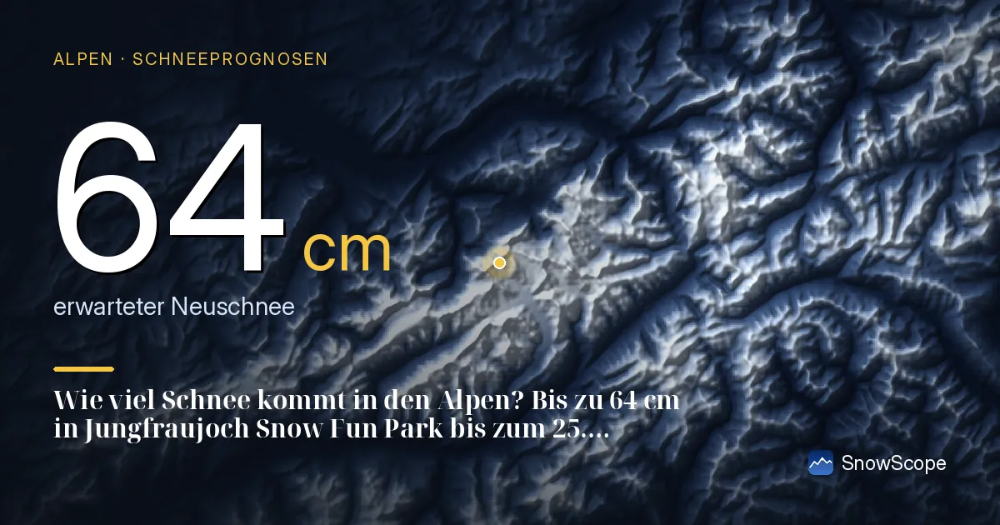

Wie viel Schnee kommt in den Alpen? Bis zu 64 cm in Jungfraujoch Snow Fun Park bis zum 25. November
Wie viel Schnee kommt in den Alpen, und wo? Bis zum 25. November kommen laut Prognose 64 cm in Jungfraujoch Snow Fun Park, 57 cm in Alpe d'Huez Grand Domaine und 57 cm in La Grave dazu; Mengen für mehrere Tage im Voraus können sich noch ändern. Hier gibt es zwei Arten von Zahlen: Schätzungen für die oberen Hänge jedes Skigebiets und Stationsmessungen, die genau sind, aber nur einen Punkt am angegebenen Tag abdecken. Jede Zahl hier ist eine Schätzung mit etwas Unsicherheit; der Trend über mehrere Tage ist meist verlässlicher als ein einzelner Wert.
Die Live-Schneeprognose für Jungfraujoch Snow Fun Park in der SnowScope-AppSchneehöhen, Pulverschnee-Alarme und 3D-Karte, gratis.
Der Schneespeicher heute
Die dickste Schneedecke dieser Gruppe hat La Grave, etwa 171 cm in den oberen Hängen; danach kommen Alpe d'Huez Grand Domaine 125 cm und Jungfraujoch Snow Fun Park 63 cm.
Heute sind 108.680 km² Boden in den Alpen mit Schnee bedeckt, sagt unser Modell, und 1.104 von 1.204 Skigebieten haben Schnee in den oberen Hängen.
| Skigebiet | Schneehöhe | Neuschnee, 72 h | Erwartet, nächste Tage | Gipfel |
|---|---|---|---|---|
| Jungfraujoch Snow Fun Park | 63 cm | 89 cm | 64 cm | 3.461 m |
| Alpe d'Huez Grand Domaine | 125 cm | 123 cm | 57 cm | 3.306 m |
| La Grave | 171 cm | 127 cm | 57 cm | 3.543 m |
| Engelberg Titlis | 42 cm | 63 cm | 48 cm | 3.040 m |
| Le Collet d'Allevard | 54 cm | 89 cm | 47 cm | 2.084 m |

Der Schnee, der noch kommt
In Jungfraujoch Snow Fun Park sind in den nächsten Tagen bis zu 64 cm Neuschnee vorhergesagt.
Vorhersagen ändern sich: Der Zeitpunkt ist meist verlässlicher als die Mengen, zwei Tage vorher noch einmal prüfen.
Auf etwa 3.450 m hat Jungfraujoch Snow Fun Park heute 49 cm; an einem normalen 22. November sind es dort 81 cm.
Das ist mehr als in 7 der 46 früheren Winter an diesem Tag.
In früheren Wintern kam der beste Schnee in Jungfraujoch Snow Fun Park meist Mitte April / Ende April.
Tag für Tag in Jungfraujoch Snow Fun Park: Sonntag, 22. November 34 cm; Montag, 23. November 44 cm; Dienstag, 24. November 1 cm; Mittwoch, 25. November 19 cm.
Höhe für Höhe in Jungfraujoch Snow Fun Park: 3.439 m 50 cm am Boden, 70 cm mehr in den nächsten 7 Tagen; 3.450 m 50 cm am Boden, 70 cm mehr in den nächsten 7 Tagen; 3.461 m 50 cm am Boden, 70 cm mehr in den nächsten 7 Tagen.
Schnee, der noch kommt
Mehr Wasser ist als Schnee unterwegs: Bis zum 25. November ergibt unsere Prognose 48 cm in Engelberg Titlis und 47 cm in Le Collet d'Allevard.
Seit dem 20. November stieg die Schneefläche von 83.480 km² auf 108.680 km²; für den 25. November ergibt die Prognose 135.600 km².
Höhe und Schneefallgrenze
Mit der Nullgradgrenze bei 2.520 m bis 3.360 m am 23. November, unter der Talstation von Jungfraujoch Snow Fun Park, sollte Niederschlag als Schnee fallen und am Berg bleiben.
In Alpe d'Huez Grand Domaine erreicht die Nullgradgrenze am 24. November 2.030 m bis 2.630 m: Weiter unten kann der Schnee nass werden, weiter oben bleibt er kalt.
Mit der Nullgradgrenze bei 2.300 m bis 3.210 m am 23. November können die unteren Hänge in La Grave nassen Schnee oder Schmelze bekommen, oben bleibt es winterlich.
Unser Modell teilt Jungfraujoch Snow Fun Park in drei Höhen: 50 cm am Gipfel (3.461 m), 50 cm an der Mittelstation (3.450 m), 50 cm im Tal (3.439 m).
Lawinengefahr und Sicherheit
Prognosen für einige Tage können sich ändern: Schau am Tag vor der Abfahrt noch einmal auf die Karte.
Tipps für Skifahrer
- Prognosen für einige Tage können sich ändern: Schau am Tag vor der Abfahrt noch einmal auf die Karte.
- Liegt die Schmelzlinie über dem Skigebiet, wird der Schnee nass. Die höchsten Lifte sind die sichere Wahl.
- Leichter Neuschnee wird unter Sonne und Ski in wenigen Stunden fest. Geh früh, um ihn in Bestform zu erwischen.
- Lies vor dem Freeriden oder einer Skitour den offiziellen Lawinenlagebericht (Links unten).
- Stell in der SnowScope-App einen Pulverschnee-Alarm ein, damit du weißt, wann Jungfraujoch Snow Fun Park Neuschnee bekommt.
Zu diesen Zahlen
Die Schneehöhen der Skigebiete sind der meiste Schnee in den oberen Hängen am angegebenen Tag; es sind Schätzungen für eine Fläche, keine Messung an einem Punkt. Prognosen können sich ändern. Lies vor dem Freeriden immer den offiziellen Lawinenlagebericht.
Offizielle Lawinenlageberichte: EAWS (Alps)
Diesen Bericht zitieren
Für Forschung, Lehre oder Presse: Zahlen und Grafiken sind unter CC BY 4.0 mit dieser Quellenangabe frei nutzbar.
SnowScope (2026), Wie viel Schnee kommt in den Alpen? Bis zu 64 cm in Jungfraujoch Snow Fun Park bis zum 25. November, https://snowscope.app/blog/de/2026/11/alps-jungfraujoch-snow-fun-park-snow-forecast-22-november-2026.html, abgerufen am 2026-11-22
SnowScope (Atlas Labs). (2026, November 22). Wie viel Schnee kommt in den Alpen? Bis zu 64 cm in Jungfraujoch Snow Fun Park bis zum 25. November. SnowScope snow reports. https://snowscope.app/blog/de/2026/11/alps-jungfraujoch-snow-fun-park-snow-forecast-22-november-2026.html
BibTeX
@misc{snowscope2026alpsjungfraujochsnowfunp,
author = {{SnowScope (Atlas Labs)}},
title = {Wie viel Schnee kommt in den Alpen? Bis zu 64 cm in Jungfraujoch Snow Fun Park bis zum 25. November},
year = {2026},
month = nov,
howpublished = {\url{https://snowscope.app/blog/de/2026/11/alps-jungfraujoch-snow-fun-park-snow-forecast-22-november-2026.html}},
note = {Published 2026-11-22 12:06 UTC; accessed 2026-11-22}
}· CC BY 4.0 · Methoden, Daten und Werkzeuge →
Jungfraujoch Snow Fun Park: Schnee und Temperatur nach Höhe, dieser Winter vs letzter (Werkzeuge) →
Jungfraujoch Snow Fun Park folgen
Gratis: eine Nachricht, wenn Neuschnee kommt, und jeden Morgen die Vorhersage.